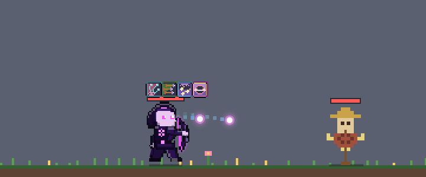
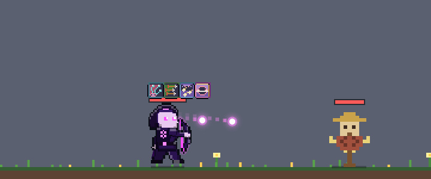

하단바 섬광 규칙 위반 11곳 + 평타 버그 3건
스펙
docs/specs/vfx-rule-fixes.md · 브랜치 impl-vfxfix → season6 · 규칙·수치 변화 없음 (연출만)요지
- 게임은 바탕화면 위 하단바에 떠 있어서, 궁극기 말고는 하단바 전체를 번쩍이거나 어둡게 하지 않는다 (
skills.js머리 주석). 2차 스킬 ★★★ 11곳이dimBand로 하단바 전체를 덮고 있었다. - 새 도구 두 개(
skills.js,dimBand바로 아래):localFlash(x, y, r, alpha, rgb)원형 섬광(바깥 30% 서서히 0),dimSpan(x0, x1, alpha, rgb, feather=24)가로 구간만 어둡게. 헤드샷은 조준경 바깥 고리만 어둡게 하는scopeVignette, 별빛 화살비는 밤하늘 자체를 대상 ±120px 로 줄였다. - 알파 최댓값·지속 시간은 그대로, 범위만 줄였다.
localFlash그림은 임시다 — 섬광 텍스처(K 시트)가 생기면 바꿀 자리라고 주석을 달았다. - 평타: 공허궁 꼬리 색, 3차 무기 타격 섬광 색(
WEAPONS.*.burstRgb), 결투·레이드 원거리 평타를 원정과 같은 그림(drawProjectile)으로.
확인 순서
- 아래 "11곳" 카드의 ▶ 를 누르면 그 스킬 ★★★ 만 반복 재생된다. 하단바 양 끝(특히 오른쪽 끝)이 그대로인지 본다.
- 카드의 전/후 그림: b = 고치기 전 가장 많이 덮이던 순간, c = 그 0.4초 뒤. 회청색 = 바탕화면이 비치는 자리.
- 평타 버그: ▶ 로 공허궁 평타·3차 평타를 재생하고, 아래 확대 캡처와 비교한다.
- 밝기를 다시 재려면 ../skills.html?patch=vfx-edge-probe 를 열고 콘솔에서
probeAll()(기준 |변화| ≤ 0.05).
수용 기준
밝기 측정 — 스킬 28종 (궁극기 제외) ★★★
하단바 양 끝 40px 평균 밝기, 시전 전 20프레임 평균 대비 시전 동안 최대 변화. 바뀌지 않은 스킬도 ±0.02~0.04 는 흔들림·잔상 때문에 생긴다.
| 스킬 | 전 왼쪽 | 전 오른쪽 | 후 왼쪽 | 후 오른쪽 | 판정 |
|---|
하단바 섬광 11곳 — 전후
평타 버그 1 — 공허궁 꼬리 색


평타 버그 2 — 3차 타격 섬광 색 (4배 확대)
평타 버그 3 — 결투·레이드 원거리 평타
결투 재생: server/duel.js
simulateDuel 결과(평타만, vfx-rule-fixes/duel-sample.json)를 왼쪽 직업으로 바꿔 재생, 평타가 날아가는 0.07초 시점. 레이드도 같은 함수(drawProjectile(flightShot(…)))를 쓴다.